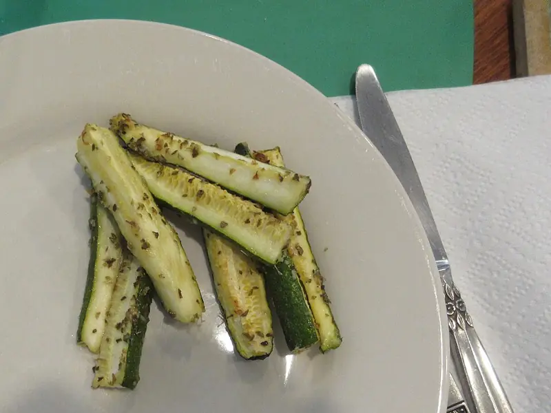

Фото: Infrogmation of New Orleans, CC BY-SA 4.0

Кабачки жареные с чесноком
Кружки кабачка в муке, обжаренные до золотистой корочки, с чесноком и зеленью
25 мин3 порц.264 ккал на порциюБ 3 · Ж 17 · У 23Русская кухня
Продукты на 3 порц.
- Кабачок2 шт
- Мука пшеничная2 ст. л.
- Растительное масло3 ст. л.
- Чеснок3 зуб.
- Укроп1 пучок
- Соль1 ч. л.
- Перец чёрный молотыйпо вкусу
Как готовить
- Нарежьте кабачки кружками толщиной 7-8 мм, посолите и оставьте на 5 минут, затем промокните салфеткой.
- Обваляйте каждый кружок в муке с обеих сторон.
- Разогрейте масло на сковороде на среднем огне и жарьте кружки по 2-3 минуты с каждой стороны до золотистого цвета.
- Выкладывайте готовые кабачки на бумажное полотенце, чтобы ушло лишнее масло.
- Пропустите чеснок через пресс, смешайте с рубленым укропом.
- Выложите кабачки на блюдо слоями, посыпая каждый слой чесночной смесью и перцем.
Совет. Молодые кабачки можно не чистить. Если любите с соусом, промажьте кружки майонезом с чесноком, но тогда блюдо уже не веганское.